Examples of work
Click to expand
Animation
This is an animation created with Pivot, pivot is a tweening animator tool
that allows for the manipulation of images and limbs on a stick figure.
Tweening animations can be created significantly faster than Cel based animations but lose freedom
in what can be created.
Some other animation tools are:
- Adobe Animate
- Sketchbook
- Doratoon
Audio
Audacity was used to record and modify a sound. Sound is stored on a computer as a series of numbers representing the wave of the Sound
, much like images this can be either stored either raw or compressed and at different qualities.
Original recorded sound: 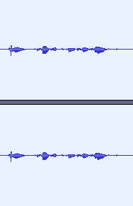 The sound was very quite so I used the amplyfy tool to make it louder, this tool has options for how much louder to make it and to allow clipping which is where the sound is louder than the maximum volume the file can store and it has to limit it, this produces a unpleasant sound. 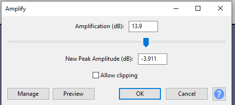 Louder sound: 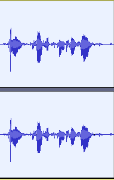 Then a Reverb effect was added. 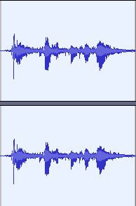 Then
Then
Original recorded sound: 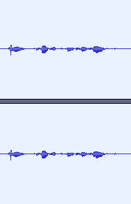 The sound was very quite so I used the amplyfy tool to make it louder, this tool has options for how much louder to make it and to allow clipping which is where the sound is louder than the maximum volume the file can store and it has to limit it, this produces a unpleasant sound. 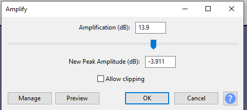 Louder sound: 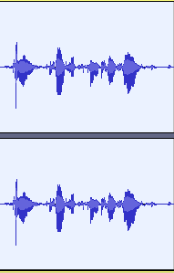 Then a Reverb effect was added. 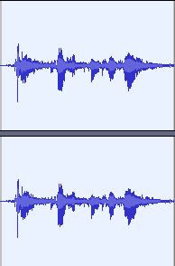
Images
Images are stored on computers as a matrix of pixels colours
with colour being represented as a combination of red gree blue and sometimes transparency.
This is often very large and so more tricks are used to save space.
One of these tricks is compression which is when the computer uses algorithms to store the image more efficently, compression algorithms come in two types. Lossless where the image can be perfectly recreated and lossy where the image loses some details, often imperceptable. Another technique is storing less bits per pixel, however this results in far lower quality images and so a trick called dithering can be used to make it seem like there are more colours than there really are.
One of these tricks is compression which is when the computer uses algorithms to store the image more efficently, compression algorithms come in two types. Lossless where the image can be perfectly recreated and lossy where the image loses some details, often imperceptable. Another technique is storing less bits per pixel, however this results in far lower quality images and so a trick called dithering can be used to make it seem like there are more colours than there really are.
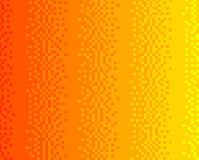
CAD
CAD or computer aided design is used to design parts to make in the real world.
This is similar to 3D modelling. I used the CAD program Onshape to create a part with text and a extruded rectangle
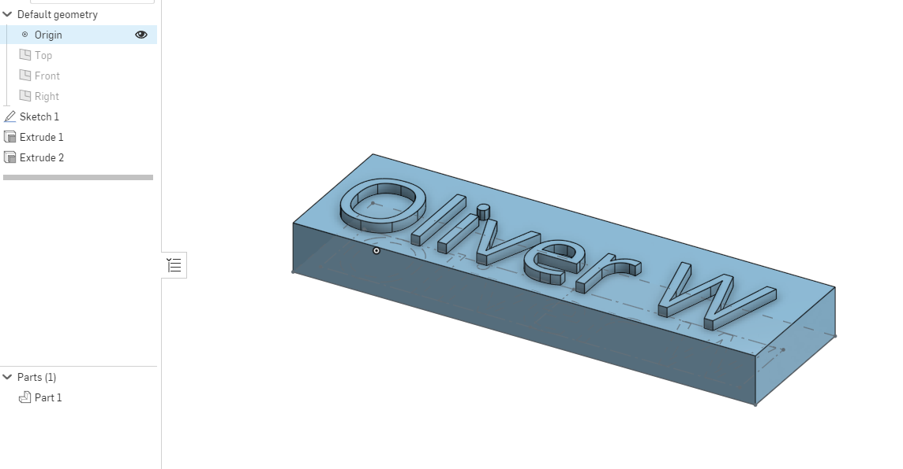
Databases
Relational databases are used in anmost all major companies to manage data.
Relational databases store data in tables containing records containg fields. The power of relational databases
is the ability to reference records from one table from another. Most relaitonal databases use SQL to query the database.
For a mock pizza ordering app I used postgreSQL to create a backend database of orders and order items
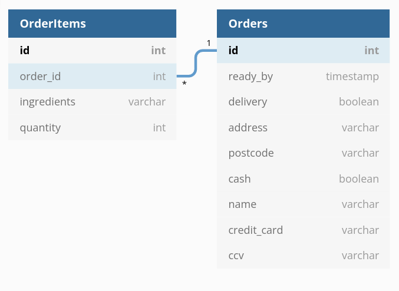